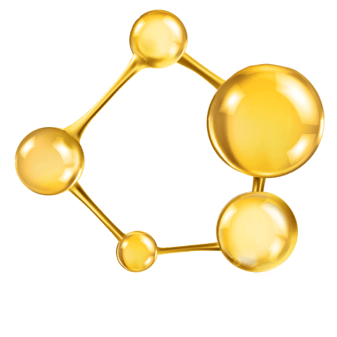

Маловязкие моторные масла MIRAX
для современных моторов
Ужесточение экологических стандартов, регламентирующих содержание вредных веществ в выхлопных газов автомобильных двигателей, модернизация ДВС, нацеленная на снижение расхода топлива, а также внедрение сложных систем очистки отработавших газов потребовали от производителей смазочных материалов создать новые моторные масла, которые в полной мере отвечают актуальным, резко возросшим к ним требованиям. В частности, для самых современных двигателей разработаны маловязкие масла классов (SAE) 0W-20, 5W-20, а также 0W-30 и 5W-30, которые изготавливаются на синтетической основе с применением пакета присадок уникальных рецептур.
Уменьшение вязкости моторных масел продиктовано конструктивными особенностями современных силовых агрегатов. Так, двигатели последних лет выпуска стали компактнее, легче, а их литровая мощность, напротив, значительно выросла (концепция downsizing) благодаря широкому применению наддува и электронно-управляемых систем питания с непосредственным впрыском топлива в цилиндры. В моторах воплотились самые передовые технологии, позволившие значительно уменьшить допуски на обработку деталей и зазоры в парах трения. При изготовлении деталей (поршни, вкладыши и т.д.) стали широко применяться современные антифрикционные покрытия. Масляные насосы получили механизм регулировки производительности в зависимостиот скорости вращения коленчатого вала. Все эти технические новшества потребовали разработки маловязких масел, которые бы гарантировали поступление смазки в пары трения на всех рабочих режимах ДВС, во всем диапазоне рабочих температур и формирование на их поверхностях прочной масляной пленки, надежно разделяющей контактирующие поверхности.
Для создания смазочных материалов MIRAX, соответствующих данным требованиям, химики корейской компании SIT Corporation LLC, используют самые современные синтетические базовые масла III, IV, V групп и высококачественный полимерный загуститель, обеспечивающий сохранение вязкости масел в допустимых пределах на протяжении регламентного срока их службы.
В частности, речь идет о продуктах топ-класса:


Важно отметить, что указанные выше моторные масла MIRAX имеют самый высокий уровень эксплуатационных свойств – API SP и ILSAC GF-6A, ACEA A5/B5, что свидетельствует о применении при их производстве самых современных пакетов присадок. Это позволяет использовать их в высоконагруженных ДВС последних поколений, которые оснащены современными системами нейтрализации выхлопных газов, а также в силовых установках гибридных автомобилей.
Отдельного внимания заслуживают энергосберегающие свойства маловязких моторных масел MIRAX, которые ориентированы на применение в моторах современных европейских, американских, японских, корейских и китайских автомобилей. Снижение механических потерь на трение в двигателях, достигаемое за счет оригинальной рецептуры смазочного материала, положительно сказывается на расходе топлива и сокращении вредных выбросов в окружающую среду. Кроме того, моторные масла MIRAX, благодаря легированию пакетов присадок уникальным комплексным антиокислительным компонентом AntiOX, обладают пролонгированным сроком службы, что снижает эксплуатационные расходы и нагрузку на экологию, связанную с утилизацией отработанных масел.
По вопросам, связанным с подбором смазочных материалов MIRAX для современных автомобилей, обращайтесь на горячую линию.